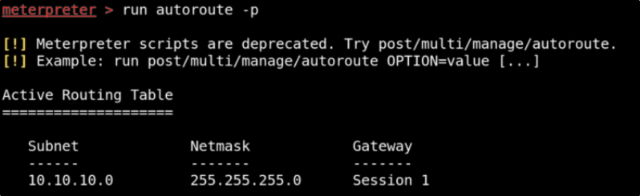

Pivoting Walktrough
Starting Metasploit, we are going to run psexec to the THEPUNISHER MACHINE:
Set a meterpreter payload and correct options for psexec module:


Using the "shell" command, we are going to create a shell on Windows.
We can run "route print"


As we can see, there are 2 networks (192.168.57.0 and 10.10.10.0)
With the "arp -a" command we can see what are the other machines
that communicate with THEPUNISHER (the 10.10.10.129 is SPIDERMAN)

If we want to connect to the other network ,we need to get routed to it.
Go back to meterpreter and execute:

We can check our route table:

Now we can try to ping this new host or do other things:

You can learn more about other tools like: proxychains